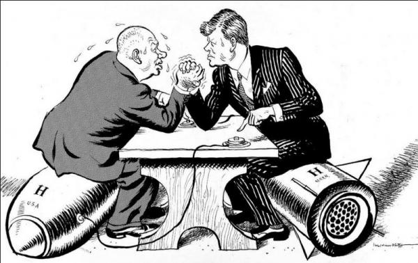
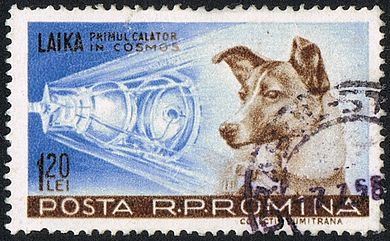
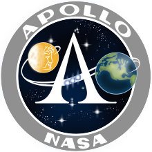
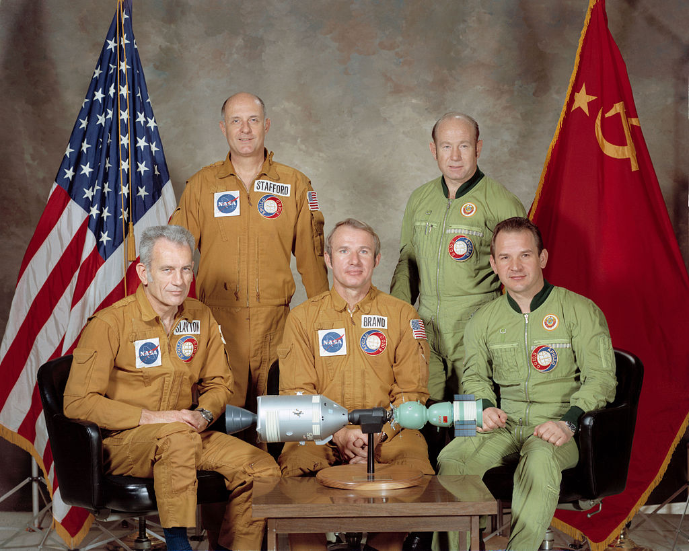
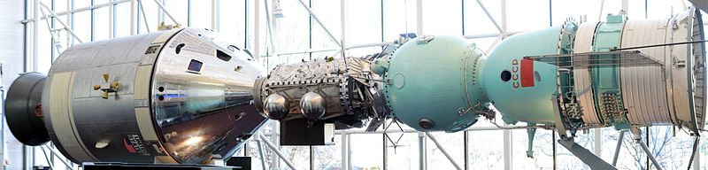

la guerre froide:
1947 et 1991 c'est la guerre froide. Deux grands puissance s'afronte:
- les Etats-Unis

- L'URSS

Ces deux grandes puissance on des ideologie totalment differentes:
les etats unis sont capitaliste alors que l'URSS est communsite.
ces deux pays sont rival sur tout les front mais il n'y a pas d'afrontement frontal

De plus ces deux puissances possèdent l'armes nuclaire et la menace d'une guerre atomique est forte.
la course a l'espace
le 4 octobre 1957 le premier satelite est envoyer dans l'espace par les sovietique. C'est le satelite "Spoutinik".
Ce premier satelite envoyer par l'URSS est une menace pour les etats unis
car il montre que l'URSS possede la technologie pour faire decoler une fusée / Missile
et donc capable d'envoyer un missile nuclaire sur les etat unis.

Esuite, l'URSS enchaine en envoyant le première être vivant dans l'espace, la chiene laika.
Les etats Unis remarque que les russe ont une avance considerable sur la course al'espace.

les etat unis créé la NASA  avec le programme Apollo en 1961 qui a pour but de ratraper le retard technologique des Etats-Unis.
avec le programme Apollo en 1961 qui a pour but de ratraper le retard technologique des Etats-Unis.
Le 1er fevrier 1961 les americains envoye leur premier satelite dans l'espace: "explorer 1".
Les americain sont determiner a ratraper les russe sur la courses a l'espace.
Suite a cela les russe envoye le premier homme dans l'espace : Youri Gagarine les 12 avril 1961.
L'URSS a toujours un coup d'avance sur les Etats-Unis.
Les americain envoyent donc aussi un homme dans l'espace: Alan Shepart le 5 mai 1961.
En 1962 lors d'un dicours le president Kennedy annonce l'objectif des americain d'aller sur la lune.
"We choose to go to the moon"
Chose promise chose du: les americain envoye en le 29 juillet 1969 les premiers homme a marcher sur la lune.
L'equipage est composé de Neil Amstrong, Buzz Aldrin et Michael collins
( il ne marchent pas sur la lune car il etait au commande de la fusée en orbite autour de la Lune )
Malgès de gros effort l'URSS n'arivera jamais a envoyer un homme sur la lune.
Cette victoire acablante de Etats-Unis marque la fin de la course a l'espace.


Apres cette victoire des Etats-Unis, les tension s'apaisent et des mission conjointe entre les deux puissance voit le jour:
C'est la mission Apollo-soyous. Cette mission marque deffinitivement la fin de cette course a l'espace.